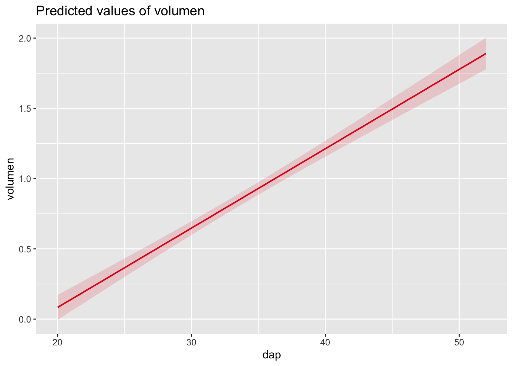

10 Técnicas para corregir la heterocedasticidad de varianzas
Transformación de variables: la única que se recomienda logarítmica, pero las demás, no son buenas en la práctica por los problemas de interpretación que genera al modificar la variable. Los econometristas usan un modelos log - log aplicando log en ambos lados y se puede hacer una interpretación de tipo porcentual, cambio de porcentaje en el eje x, tiene un cambio en el porcentaje de y.
Usar el paquete lmtest: los modelos siguientes corrigen la matriz de covarianzas, identificando el problema usando tecnicas complejas como lo es HC1, este método corrige y no se requiere verificación, a diferencia de los otros métodos de transformación de variables.
Usar el paquete gls: generalized leat squares
# vcov matriz de covarianzas. Hay varias opciones HC1, HC2, etc. Esto es un métdo de sandwich con un estimador de White, más sencillo en bayesiana
coeftest(regresion_simple, vcov = vcovHC(regresion_simple, "HC1"))##
## t test of coefficients:
##
## Estimate Std. Error t value Pr(>|t|)
## (Intercept) -1.046112 0.111866 -9.3515 2.954e-10 ***
## dap 0.056475 0.003530 15.9988 6.296e-16 ***
## ---
## Signif. codes: 0 '***' 0.001 '**' 0.01 '*' 0.05 '.' 0.1 ' ' 1Se pueden conocer los intervalos de confianza:
## 2.5 % 97.5 %
## (Intercept) -1.27490335 -0.8173214
## dap 0.04925587 0.0636951Acá se interpreta el tamño del efecto usando el IC: por cada 1 \(cm\) que aumenta el \(dap\), el \(volumen\) de los árboles aumentarán entre 0.04925587 y 0.0636951 \(m^{3}\).
Ahora podemos realizar un gráfico de nuestro modelo pero teniendo en consideración:

Este es el gráfico del modelo con un intervalode confianza al 95%
La intepretación del modelo sería la siguiente:
La variable dap presentó una relación positiva con el volumen y se considera estadísticamente signigificativa (\(\alpha = 0.05\)), por cada \(1 cm\) en el incremento del \(dap\), el \(volumen\) se incrementó \(0.06\), \(EE = 0.004\), \(95% IC [0.05, 0.06]\), \(p < 0.001\). El modelo explicó una parte sustancial de la varianza (\(R^2 = 0.93\)).